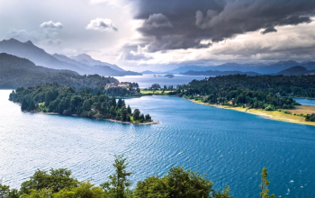
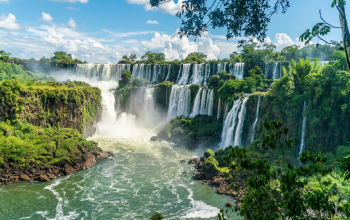

Desde la imponente Patagonia hasta el ritmo del tango en Buenos Aires, descubrí un país de contrastes donde la naturaleza salvaje se encuentra con una cultura apasionante. Bienvenidos a la tierra del sol, del mate y de los sueños.
Argentina es el octavo país más grande del mundo, con una diversidad geográfica y cultural que sorprende a cada paso.
Ubicada en el extremo sur de Sudamérica, Argentina se extiende desde la frontera con Bolivia hasta el confín del continente en Tierra del Fuego. Con 23 provincias y una Ciudad Autónoma, ofrece paisajes que van desde selvas tropicales y cascadas imponentes hasta glaciares milenarios y desiertos de altura. Su historia, marcada por oleadas inmigratorias de Europa y Asia, ha forjado una identidad única donde el tango, el fútbol, el asado y el mate son mucho más que tradiciones: son forma de vida.
Con más de 6 millones de turistas internacionales por año, Argentina se posiciona como uno de los destinos más atractivos de América Latina. Ya sea que busques aventura, cultura, gastronomía o simplemente desconectarte en paisajes de ensueño, aquí encontrarás tu lugar.
Los lugares más visitados que no podés dejar de conocer

Glaciares, montañas nevadas y lagos cristalinos en el confín del mundo. El Calafate, Bariloche y Ushuaia te esperan.

Una de las Siete Maravillas Naturales del Mundo. 275 saltos de agua en medio de la selva misionera.
La capital del tango, con arquitectura europea, bares de culto y una vida nocturna incomparable.